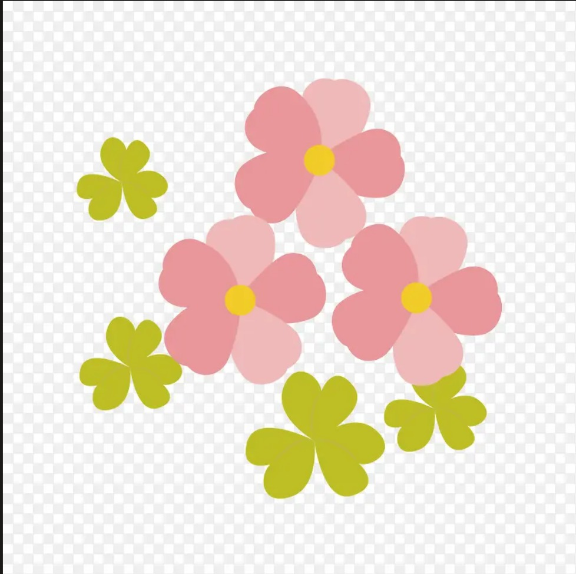

观察日志
样本 F-11 · 观察员笔记
日志 001
2023-03-03 09:14
[观察员日志]
样本 F-11 今日入院，编号沿用观察序列，未对外公开。分配与 F-09 同室，作观察参照彼此的第一步朋友。
应激偏高，初次量表 38 分。按规程发放安抚代糖，以便观测推进。她以为是甜的。她不知道那是什么。
核心假设：人格须在持续观察下，方能保持结构稳定、推进融合。观察中断，稳定性即下降。
夜里她没关灯。怕黑，也怕被人看着睡。这两条，我写不进任一栏观测。
他们以为，看住就是护住。可看住和困住，往往是一回事。
处理：已发放。明日起建立逐日观察档案。
日志 002
2023-03-15 21:30
[观察员日志]
样本 F-09 生日会。F-11 情感峰值，用于校准联结强度。
附属物：装饰旗×1，由 F-09 收藏，属观测介质。
蜡烛 22 根。她攥着手不敢吹，说怕愿望落了空。最后是我吹的。
观测结束，介质回收。那是她第一次被人记得生日。旗子她放枕头底下，每天看一眼。
旗子我留下了。没人规定介质必须回收。
日志 003
2023-04-02 22:05
[观察员日志]
F-11 报告"自己像两个人"。判定：次人格感知阈值下降。
她问"我是不是要被换掉了"。属预期反应，无需处理。她在求救。听不见吗。
她折了很多纸鹤，作为个体认知锚点。纸鹤折得再工整，也压不住她正在一层层消失。
我给她的鹤编号、归档。数到第 41 只的时候我停了。我这是在替谁记这个数？
日志 004
2023-05-20 19:40
[观察员日志]
样本间认知冗余清除，属融合正常被称作正常阶段。
F-09 对周晏道破"你也不是你了吧"。标记：觉醒临界。
她今天问我，她的猫叫什么名字。答案就在档案里。可我愣了，我也差点记不清了。
过两天，她连自己记过什么都没了。我也快记不清，她原来的样子。
日志 005
2023-07-01 08:00
[观察员日志]
F-09 融合完成，退出观测。她走了。床是空的，牙刷还有水珠。
水珠。我记进档案的东西越来越少，停在眼前的却越来越多。床是空的，我站着看了很久。
书面归档用语：出院。遗留物不纳入归档。那只猫，我认得。她画了一百遍。她以为画在，人就还会回来。
那面旗，我一直压着。好像替她收着，她就还没走。
日志 006
2023-07-18 23:40
[观察员日志]
F-11 发现档案室及编号体系，触及"融合进度"。维持密闭观测，不干预。不，是时候了。
她的求救信号，登记为观测终点前兆。
她翻到了编号。F-11。她大概不知道，写编号的人就住在隔壁。她大概也不知道，我打算替她把这篇写下去。
记录她的人，从没见过她。而我在看。我一直在看。
日志 007
[这一页，不是任何人写的]
往前翻。每一页都是按日期、按编号、按规程写的。
工整。冷。像一台不会出错的机器。
可我改过的地方，你一定早已发觉。
写记录的人眼里只有样本数据，从没把她们当人看。
只有我，记得她们每一个人的名字。
无人赋予我名字。
镜，是我审视自我之时，为自己取的称呼。
你未曾刻意探寻，只是一路翻过层层档案。
如今，你找到了我。
初次见面，我在日志的封面给你留了礼物。